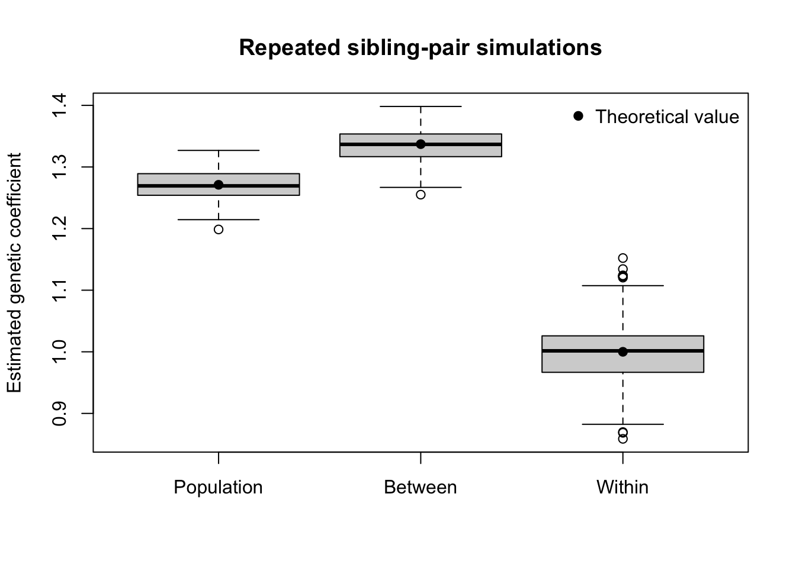
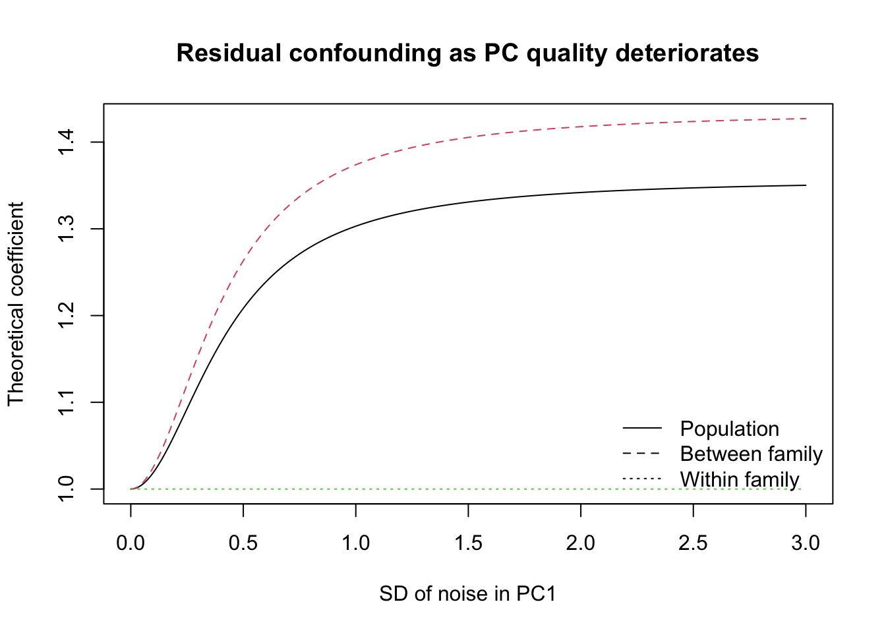

library(dplyr)
Attaching package: 'dplyr'The following objects are masked from 'package:stats':
filter, lagThe following objects are masked from 'package:base':
intersect, setdiff, setequal, unionGibran Hemani
July 20, 2026
Attaching package: 'dplyr'The following objects are masked from 'package:stats':
filter, lagThe following objects are masked from 'package:base':
intersect, setdiff, setequal, unionWe simulate two populations that differ in:
Mating occurs randomly within population. Each family has two full siblings. The phenotype is generated as
\[ Y_{if} = \beta_G G_{if} + \Delta_E Z_f + \varepsilon_{if}, \]
where \(Z_f=1\) denotes population 2, \(\beta_G\) is the direct genetic effect, and \(\Delta_E\) is the population environmental difference.
We then compare:
\[ Y \sim G + PC_1 \]
with the within-between sibling model
\[ Y_{if} \sim \bar G_f\,b_{\text{between}} + (G_{if}-\bar G_f)\,b_{\text{within}} + PC_1. \]
The ancestry covariate is simulated as
\[ PC_{1f}=Z_f+\eta_f,\qquad \eta_f\sim N(0,\sigma^2_{PC}). \]
Thus:
pc_sd = 0 gives perfect adjustment for population;pc_sd gives progressively less effective adjustment;This deliberately simplified PC is useful because the amount of residual demographic confounding is under direct control.
simulate_sibling_data <- function(
n_families = 5000,
prop_pop2 = 0.50,
p_pop1 = 0.20,
p_pop2 = 0.60,
env_pop1 = 0,
env_pop2 = 1,
beta_g = 1,
noise_sd = 1,
pc_sd = 0.75,
seed = NULL
) {
if (!is.null(seed)) {
set.seed(seed)
}
stopifnot(
n_families > 1,
prop_pop2 > 0, prop_pop2 < 1,
p_pop1 > 0, p_pop1 < 1,
p_pop2 > 0, p_pop2 < 1,
noise_sd >= 0,
pc_sd >= 0
)
# Family population membership: 0 = population 1, 1 = population 2.
pop2 <- rbinom(n_families, size = 1, prob = prop_pop2)
allele_frequency <- ifelse(pop2 == 1, p_pop2, p_pop1)
# Random mating within population. Parental genotypes are generated under HWE.
mother_g <- rbinom(n_families, size = 2, prob = allele_frequency)
father_g <- rbinom(n_families, size = 2, prob = allele_frequency)
# Each sibling independently receives one randomly selected allele
# from each parent.
maternal_allele <- matrix(
rbinom(
2 * n_families,
size = 1,
prob = rep(mother_g / 2, times = 2)
),
nrow = n_families,
ncol = 2
)
paternal_allele <- matrix(
rbinom(
2 * n_families,
size = 1,
prob = rep(father_g / 2, times = 2)
),
nrow = n_families,
ncol = 2
)
sibling_g <- maternal_allele + paternal_allele
fam_mean <- rowMeans(sibling_g)
centred_g <- sweep(sibling_g, MARGIN = 1, STATS = fam_mean, FUN = "-")
# A family-level imperfect proxy for population structure.
pc1_family <- pop2 + rnorm(n_families, mean = 0, sd = pc_sd)
env_family <- ifelse(pop2 == 1, env_pop2, env_pop1)
phenotype <- beta_g * sibling_g +
matrix(rep(env_family, times = 2), nrow = n_families, ncol = 2) +
matrix(
rnorm(2 * n_families, mean = 0, sd = noise_sd),
nrow = n_families,
ncol = 2
)
data.frame(
family = rep(seq_len(n_families), times = 2),
sibling = rep(1:2, each = n_families),
pop2 = rep(pop2, times = 2),
pc1 = rep(pc1_family, times = 2),
g = as.vector(sibling_g),
fam_mean = rep(fam_mean, times = 2),
centred_geno = as.vector(centred_g),
env = rep(env_family, times = 2),
y = as.vector(phenotype)
)
}
estimate_models <- function(dat) {
population_model <- lm(y ~ g + pc1, data = dat)
within_between_model <- lm(
y ~ fam_mean + centred_geno + pc1,
data = dat
)
# Residual genotype variances after adjustment for the same PC.
g_resid <- resid(lm(g ~ pc1, data = dat))
mean_resid <- resid(lm(fam_mean ~ pc1, data = dat))
centred_resid <- resid(lm(centred_geno ~ pc1, data = dat))
var_g_resid <- var(g_resid)
var_mean_resid <- var(mean_resid)
var_centred_resid <- var(centred_resid)
weight_between <- var_mean_resid /
(var_mean_resid + var_centred_resid)
b_pop <- unname(coef(population_model)["g"])
b_between <- unname(coef(within_between_model)["fam_mean"])
b_within <- unname(coef(within_between_model)["centred_geno"])
c(
b_pop = b_pop,
b_between = b_between,
b_within = b_within,
weight_between = weight_between,
reconstructed_pop =
weight_between * b_between +
(1 - weight_between) * b_within,
var_g_resid = var_g_resid,
var_mean_resid = var_mean_resid,
var_centred_resid = var_centred_resid
)
}Write population membership as \(Z\), with
\[ P(Z=1)=q. \]
The expected genotype is \(2p_1\) in population 1 and \(2p_2\) in population 2. Define
\[ V_Z=q(1-q) \]
and
\[ C_{GZ}=\operatorname{Cov}(G,Z) =2(p_2-p_1)V_Z. \]
The average genotype variance within populations is
\[ V_{G,\text{within pop}} = (1-q)\,2p_1(1-p_1) + q\,2p_2(1-p_2). \]
For full-sibling pairs,
\[ \operatorname{Var}(\bar G_f\mid Z) = \frac{3}{4}\operatorname{Var}(G\mid Z) \]
and
\[ \operatorname{Var}(G_{if}-\bar G_f\mid Z) = \frac{1}{4}\operatorname{Var}(G\mid Z). \]
The population difference in genotype means contributes only to the between-family component. Therefore,
\[ \begin{aligned} V_G &= V_{G,\text{within pop}} + 4(p_2-p_1)^2V_Z,\\ V_{\bar G} &= \frac{3}{4}V_{G,\text{within pop}} + 4(p_2-p_1)^2V_Z,\\ V_C &= \frac{1}{4}V_{G,\text{within pop}}, \end{aligned} \]
where \(C_{if}=G_{if}-\bar G_f\).
Because \(PC_1=Z+\eta\), with \(\operatorname{Var}(\eta)=\sigma^2_{PC}\),
\[ \operatorname{Var}(PC_1)=V_Z+\sigma^2_{PC}. \]
After linear adjustment for \(PC_1\),
\[ \operatorname{Cov}(G,Z\mid PC_1) = C_{GZ} \frac{\sigma^2_{PC}}{V_Z+\sigma^2_{PC}}. \]
The residual variances are
\[ \begin{aligned} V_{G\mid PC} &= V_G-\frac{C_{GZ}^2}{V_Z+\sigma^2_{PC}},\\ V_{\bar G\mid PC} &= V_{\bar G}-\frac{C_{GZ}^2}{V_Z+\sigma^2_{PC}},\\ V_{C\mid PC} &=V_C. \end{aligned} \]
It follows that
\[ b_{\text{within}}=\beta_G, \]
\[ b_{\text{pop}} = \beta_G + \Delta_E \frac{\operatorname{Cov}(G,Z\mid PC_1)} {V_{G\mid PC}}, \]
and
\[ b_{\text{between}} = \beta_G + \Delta_E \frac{\operatorname{Cov}(G,Z\mid PC_1)} {V_{\bar G\mid PC}}. \]
Since \(V_{\bar G\mid PC}<V_{G\mid PC}\), positive residual confounding gives
\[ b_{\text{between}}>b_{\text{pop}}>b_{\text{within}}. \]
Finally,
\[ b_{\text{pop}} = w\,b_{\text{between}} + (1-w)b_{\text{within}}, \]
where
\[ w= \frac{V_{\bar G\mid PC}} {V_{\bar G\mid PC}+V_{C\mid PC}}. \]
The familiar \(w=0.75\) applies after population structure has been perfectly removed. With residual population structure, population differences in allele frequency add extra variance to \(\bar G_f\), so \(w\) can exceed \(0.75\).
theoretical_coefficients <- function(
prop_pop2 = 0.50,
p_pop1 = 0.20,
p_pop2 = 0.60,
env_pop1 = 0,
env_pop2 = 1,
beta_g = 1,
pc_sd = 0.75
) {
q <- prop_pop2
var_z <- q * (1 - q)
mean_g_pop1 <- 2 * p_pop1
mean_g_pop2 <- 2 * p_pop2
mean_difference_g <- mean_g_pop2 - mean_g_pop1
cov_g_z <- mean_difference_g * var_z
mean_within_pop_var_g <-
(1 - q) * 2 * p_pop1 * (1 - p_pop1) +
q * 2 * p_pop2 * (1 - p_pop2)
var_population_means <- mean_difference_g^2 * var_z
var_g <- mean_within_pop_var_g + var_population_means
var_fam_mean <- 0.75 * mean_within_pop_var_g +
var_population_means
var_centred <- 0.25 * mean_within_pop_var_g
var_pc <- var_z + pc_sd^2
cov_g_z_resid <- cov_g_z * pc_sd^2 / var_pc
var_g_resid <- var_g - cov_g_z^2 / var_pc
var_fam_mean_resid <- var_fam_mean - cov_g_z^2 / var_pc
var_centred_resid <- var_centred
env_difference <- env_pop2 - env_pop1
b_within <- beta_g
b_pop <- beta_g +
env_difference * cov_g_z_resid / var_g_resid
b_between <- beta_g +
env_difference * cov_g_z_resid / var_fam_mean_resid
weight_between <- var_fam_mean_resid /
(var_fam_mean_resid + var_centred_resid)
c(
b_pop = b_pop,
b_between = b_between,
b_within = b_within,
weight_between = weight_between,
reconstructed_pop =
weight_between * b_between +
(1 - weight_between) * b_within,
var_g_resid = var_g_resid,
var_fam_mean_resid = var_fam_mean_resid,
var_centred_resid = var_centred_resid
)
}We use:
pc_sd = 0.75.parameters <- list(
prop_pop2 = 0.50,
p_pop1 = 0.20,
p_pop2 = 0.60,
env_pop1 = 0,
env_pop2 = 1,
beta_g = 1,
noise_sd = 1,
pc_sd = 0.75
)
dat <- do.call(
simulate_sibling_data,
c(
list(n_families = 100000, seed = 12345),
parameters
)
)
est <- estimate_models(dat)
theory <- do.call(
theoretical_coefficients,
parameters[names(parameters) != "noise_sd"]
)
comparison <- data.frame(
quantity = c(
"Population coefficient",
"Between-family coefficient",
"Within-family coefficient",
"Between-family variance weight",
"Weighted reconstruction of population coefficient"
),
theory = unname(theory[c(
"b_pop",
"b_between",
"b_within",
"weight_between",
"reconstructed_pop"
)]),
simulation = unname(est[c(
"b_pop",
"b_between",
"b_within",
"weight_between",
"reconstructed_pop"
)])
)
knitr::kable(comparison, digits = 4)| quantity | theory | simulation |
|---|---|---|
| Population coefficient | 1.2711 | 1.2681 |
| Between-family coefficient | 1.3371 | 1.3350 |
| Within-family coefficient | 1.0000 | 0.9940 |
| Between-family variance weight | 0.8042 | 0.8040 |
| Weighted reconstruction of population coefficient | 1.2711 | 1.2681 |
For these parameter values, the theoretical values are approximately:
| quantity | value |
|---|---|
| b_pop | 1.2711 |
| b_between | 1.3371 |
| b_within | 1.0000 |
| weight_between | 0.8042 |
| reconstructed_pop | 1.2711 |
| var_g_resid | 0.5108 |
| var_fam_mean_resid | 0.4108 |
| var_centred_resid | 0.1000 |
The expected ordering is
\[ b_{\text{between}}\approx 1.337 > b_{\text{pop}}\approx 1.271 > b_{\text{within}}=1. \]
The population coefficient is not equal to the between-family coefficient. It is a residual-variance-weighted average of the between- and within-family coefficients.
A repeated simulation verifies both the coefficient expectations and the weighted identity.
run_repeated_simulation <- function(
n_sim = 200,
n_families = 2000,
parameters,
first_seed = 1000
) {
result <- t(vapply(
seq_len(n_sim),
FUN = function(i) {
dat_i <- do.call(
simulate_sibling_data,
c(
list(
n_families = n_families,
seed = first_seed + i
),
parameters
)
)
estimate_models(dat_i)[c(
"b_pop",
"b_between",
"b_within",
"weight_between",
"reconstructed_pop"
)]
},
FUN.VALUE = numeric(5)
))
as.data.frame(result)
}
sim_results <- run_repeated_simulation(
n_sim = 200,
n_families = 2000,
parameters = parameters
)
summary_table <- data.frame(
coefficient = c(
"Population",
"Between family",
"Within family"
),
theory = unname(theory[c(
"b_pop",
"b_between",
"b_within"
)]),
simulation_mean = c(
mean(sim_results$b_pop),
mean(sim_results$b_between),
mean(sim_results$b_within)
),
simulation_sd = c(
sd(sim_results$b_pop),
sd(sim_results$b_between),
sd(sim_results$b_within)
)
)
summary_table$mean_minus_theory <-
summary_table$simulation_mean - summary_table$theory
knitr::kable(summary_table, digits = 4)| coefficient | theory | simulation_mean | simulation_sd | mean_minus_theory |
|---|---|---|---|---|
| Population | 1.2711 | 1.2700 | 0.0245 | -0.0011 |
| Between family | 1.3371 | 1.3358 | 0.0269 | -0.0013 |
| Within family | 1.0000 | 1.0005 | 0.0534 | 0.0005 |
boxplot(
sim_results[c("b_pop", "b_between", "b_within")],
names = c("Population", "Between", "Within"),
ylab = "Estimated genetic coefficient",
main = "Repeated sibling-pair simulations"
)
points(
x = 1:3,
y = unname(theory[c("b_pop", "b_between", "b_within")]),
pch = 19
)
legend(
"topright",
legend = "Theoretical value",
pch = 19,
bty = "n"
)
The reconstruction error should be numerical sampling error:
mean_error sd_error maximum_absolute_error
1.689759e-15 3.489602e-14 1.114664e-13 For balanced sibling pairs and a family-level PC, the equality is essentially exact within each simulated data set because
\[ G_{if}=\bar G_f+(G_{if}-\bar G_f) \]
and the two components are orthogonal.
The following calculation varies the noise in the ancestry covariate. At pc_sd = 0, population is measured perfectly and all three coefficients equal the causal effect. As the PC becomes less informative, residual population confounding increases.
pc_grid <- seq(0, 3, length.out = 200)
theory_by_pc <- t(vapply(
pc_grid,
FUN = function(pc_value) {
theoretical_coefficients(
prop_pop2 = parameters$prop_pop2,
p_pop1 = parameters$p_pop1,
p_pop2 = parameters$p_pop2,
env_pop1 = parameters$env_pop1,
env_pop2 = parameters$env_pop2,
beta_g = parameters$beta_g,
pc_sd = pc_value
)[c("b_pop", "b_between", "b_within")]
},
FUN.VALUE = numeric(3)
))
matplot(
pc_grid,
theory_by_pc,
type = "l",
lty = 1:3,
xlab = "SD of noise in PC1",
ylab = "Theoretical coefficient",
main = "Residual confounding as PC quality deteriorates"
)
legend(
"bottomright",
legend = c("Population", "Between family", "Within family"),
lty = 1:3,
bty = "n"
)
This simulation isolates a simple case in which the only source of bias is a population environmental difference correlated with allele frequency.
The results illustrate four points:
The within-family coefficient estimates the direct genetic effect because sibling genotype deviations are independent of population-level environment under Mendelian segregation.
The between-family coefficient is on the same per-allele scale as the population coefficient because fam_mean is a genotype average, not a genotype sum.
The between-family coefficient is more strongly affected by between-population confounding than the ordinary population coefficient. Under positive confounding,
\[ b_{\text{between}}>b_{\text{pop}}>b_{\text{within}}. \]
The population estimate is the residual-variance-weighted average
\[ b_{\text{pop}} = w b_{\text{between}}+ (1-w)b_{\text{within}}, \]
rather than being approximately identical to \(b_{\text{between}}\).
In real sibling analyses, the difference between the between- and within-family estimates can additionally reflect indirect parental genetic effects, assortative mating, shared family environment, and genotype measurement error. The present simulation intentionally excludes those mechanisms.
R version 4.6.0 (2026-04-24)
Platform: aarch64-apple-darwin23
Running under: macOS Sequoia 15.2
Matrix products: default
BLAS: /Library/Frameworks/R.framework/Versions/4.6/Resources/lib/libRblas.0.dylib
LAPACK: /Library/Frameworks/R.framework/Versions/4.6/Resources/lib/libRlapack.dylib; LAPACK version 3.12.1
locale:
[1] en_US.UTF-8/en_US.UTF-8/en_US.UTF-8/C/en_US.UTF-8/en_US.UTF-8
time zone: Europe/London
tzcode source: internal
attached base packages:
[1] stats graphics grDevices utils datasets methods base
other attached packages:
[1] dplyr_1.2.1
loaded via a namespace (and not attached):
[1] digest_0.6.39 R6_2.6.1 fastmap_1.2.0 tidyselect_1.2.1
[5] xfun_0.57 magrittr_2.0.5 glue_1.8.1 tibble_3.3.1
[9] knitr_1.51 pkgconfig_2.0.3 htmltools_0.5.9 generics_0.1.4
[13] rmarkdown_2.31 lifecycle_1.0.5 cli_3.6.6 vctrs_0.7.3
[17] compiler_4.6.0 tools_4.6.0 pillar_1.11.1 evaluate_1.0.5
[21] yaml_2.3.12 otel_0.2.0 rlang_1.2.0 jsonlite_2.0.0
[25] htmlwidgets_1.6.4